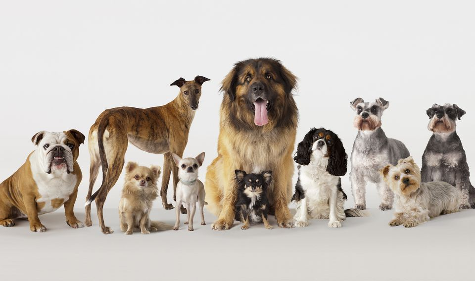
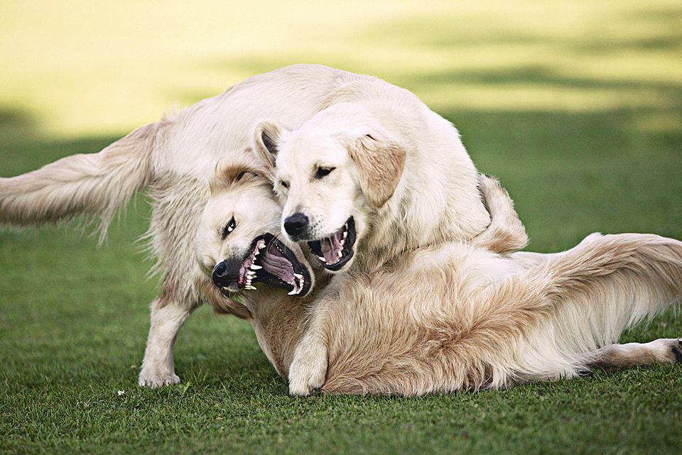

Breed diversity
Dog breed diversity is evidence of the creativity of human selection over thousands of years. The range of sizes, shapes, and temperaments among breeds is astounding, ranging from the small height of Chihuahuas to the commanding presence of Great Danes. This variety results from intentional breeding attempts that highlight particular features for particular functions, such as friendship, hunting, herding, or guarding. The distinct qualities of each breed are a reflection of both the cultural preferences of its home region and the necessities of its original role. For instance, Siberian Huskies' robust body and thick coat are a reflection of their cold-climate heritage, as they were raised to pull sleds over great distances. Greyhounds, on the other hand, have a sleek build and quick movements that are perfected for fast-paced pursuit—a talent developed over many generations of focused breeding for hunting and tracking. Breeds differ greatly in terms of their behavioral characteristics in addition to their physical characteristics. Basenjis, for example, have an independent personality, whereas Border Collies are eager to please. Because of this diversity, people can choose a dog that will suit their lifestyle and energy requirements, whether they are looking for a playful running partner, a kind therapy dog, or a watchful protector. In the end, breed diversity makes our lives richer by providing us with a wide variety of dog friends, each with a special combination of charm, aptitude, and personality.

POPULAR BREEDS
Some things to consider
Some dog breeds are adored for their distinctive qualities, yet because of their innate qualities, they could be dangerous in some family settings. Breeds like Rottweilers and Doberman Pinschers, which are bred for protection or guarding, can display territorial behavior and become prone to aggressiveness if they are not trained and socialized from an early age. In a similar vein, tiny pets or young children may be at risk from breeds like Huskies or Terriers that have strong hunting drives if not properly monitored. Furthermore, high-energy breeds like Border Collies and Dalmatians can become destructive or restless in the absence of sufficient mental and physical activity, which can cause behavioral problems in a family environment. Before bringing a dog into their home, prospective owners must do extensive research, comprehend the unique requirements and potential difficulties associated with the breed, and provide the right training, socialization, and supervision to guarantee a positive relationship between the family and the dog. For the benefit of the family and the dog, responsible ownership can reduce these hazards and promote a secure and caring environment. Early intervention and professional support are also helpful in this regard.

TIPS 4 OWNERS